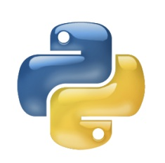

If you want to learn how can you write a file like this, you should learn about [ HTML&CSS ].when you finish that, you can write a file like this.
It is a programming language used to program websites, and several other programming languages are added to it
This language is the basis of websites
For example, if we want to build a house, then this language is the building and structure material for this house
As for CSS
This language serves as a beauty to this site and is a decoration for this home
Either JavaScript language
It is the agent that builds and performs specific functions that we direct
For example, we can create a button on the website and there will be a paragraph under this button. When you press the button, the paragraph changes to another paragraph, and this is a simple example
